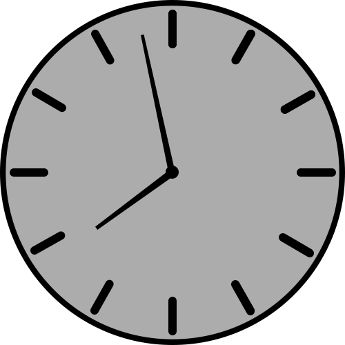
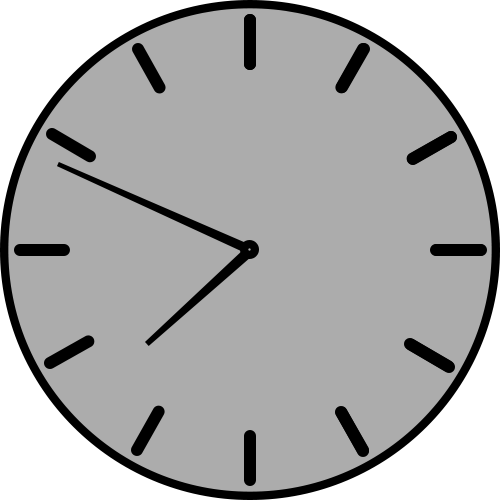

First lecture of the week
On Tuesdays I can sleep longer due to the fact that the first lecture of the week starts only at 10:30. I usually get up at 8:30 on Tuesdays, to make my morning routine and learn a bit for today's lecture. Less than an hour before the lecture, I leave the dorm, in order to be on time for the Mathematical Logic lecture which is tutored by K. Podnieks.
Back to work

At the end of the lecture, I go to the cafe Daily for lunch to keep me energized throughout the day. After lunch, I go to work, where I continue to work on my assignment, and additionally review the works of others and write down comments as needed. Like Monday, today I work up to almost eight, as the next two days will mostly be spent on the university stuff. On Wednesdays I take a full break from work and on Thursdays I work from school when I can.
Tuesday evenings
Shortly before eight, I leave the workplace and head back to the dormitories. When returning to the dorm, I make dinner and then start doing homework for university. The first homework I do is for A.Š ostaks Formal Grammar test that is mandatory every week. Finally, I start doing homework which was from today's lecture. Due to its size, only half is done, so I leave it for another day. I follow my evening routine and then go to bed.